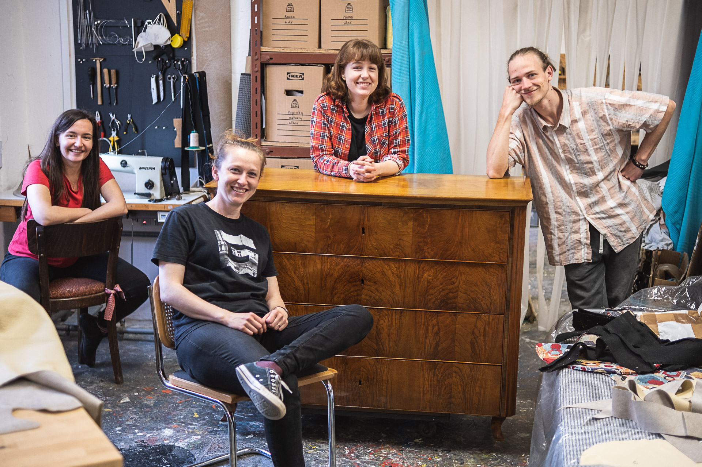

O nás
Hana, Veronika, Tereza a Petr. Čtyři kamarádi, kteří se potkali při studiu restaurování nábytku na VOŠ v Brně. Spojuje nás láska ke starému nábytku – a přesto je parketou každého z nás něco jiného.
Hana miluje vyplétání ratanu, podlepování dýh a intarzií.
Kromě toho drží v rukou řízení celé dílny.
Tereza se vrhla na čalounění a prohlubuje své znalosti studiem oboru
čalouník na SŠSŘ Bosonohy a Muzeologie na MUNI. Práce se dřevem se ale rozhodně nebojí.
Veronika se ráda pouští do hrubších prací na konstrukcích – tesání dlátem je její srdcovka.
Petr si nejraději stoupne k soustruhu nebo nabrousí všechny dláta a hoblíky v dílně.
Sdílíme přístup ke starým předmětům – milujeme, když můžeme zachovat patinu, která vypráví příběh každého kusu. K restaurování přistupujeme citlivě, vždy přemýšlíme, co všechno lze uchovat, a snažíme se vyhýbat zbytečně invazivním zásahům. Dobře víme, že starý lak není nutné vždy obrousit – někdy stačí zvolit správný restaurátorský přípravek, který povrchovou úpravu vyčistí, rozleští a nábytek může sloužit dál bez ztráty historické hodnoty.
Ale jsme rádi za každý kousek, který neskončí na smetišti. Na přání zákazníka se klidně pustíme i do kompletní renovace – a z nábytku vznikne designový kus, který září čistotou a novotou.
